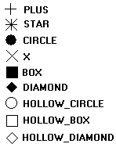

A mark is a punctual representation. It can have different sizes and types. All types are affected only by mark attributes and by the foreground color.
All marks in all drivers are simulated using other CD primitives, except cdCanvasPixel.
void cdCanvasPixel(cdCanvas* canvas, int x, int y, long int color); [in C]
void cdfCanvasPixel(cdCanvas* canvas, double x, double y, long int color); [in C]
void wdCanvasPixel(cdCanvas* canvas, double x, double y, long int color); (WC) [in C]
canvas:Pixel(x, y: number, color: lightuserdata) [in Lua]
canvas:fPixel(x, y: number, color: lightuserdata) [in Lua]
canvas:wPixel(x, y: number, color: lightuserdata) (WC) [in Lua]
Configures the pixel (x,y) with the color defined by color. It is the smallest element of the canvas. It depends only on global attributes of the canvas. It can be very slow on some drivers. Sometimes it is implemented as a rectangle with size 1x1.
void cdCanvasMark(cdCanvas* canvas, int x, int y); [in C]
void cdfCanvasMark(cdCanvas* canvas, double x, double y); [in C]
void wdCanvasMark(cdCanvas* canvas, double x, double y); (WC) [in C]
canvas:Mark(x, y: number) [in Lua]
canvas:fMark(x, y: number) [in Lua]
canvas:wMark(x, y: number) (WC) [in Lua]
Draws a mark in (x,y) using the current foreground color. It is not possible to use this function between a call to functions cdCanvasBegin and cdCanvasEnd if the type of mark is set to CD_DIAMOND. If the active driver does not include this primitive, it will be simulated using other primitives from the library, such as cdCanvasLine.
If you will call this function several times in a sequence, then it is recommended that the application changes the filling and line attributes to those used by this function:
cdCanvasInteriorStyle(canvas, CD_SOLID); cdCanvasLineStyle(canvas, CD_CONTINUOUS); cdCanvasLineWidth(canvas, 1);
This will greatly increase this function's performance. Also in this case, if the mark is very small, we suggest using the cdCanvasPixel function so that the application itself draws the mark. In many cases, this also increases this function's performance.
int cdCanvasMarkType(cdCanvas* canvas, int type); [in C]
canvas:MarkType(type: number) -> (old_type: number) [in Lua]
Configures the current mark type for: CD_PLUS, CD_STAR, CD_CIRCLE, CD_X, CD_BOX, CD_DIAMOND, CD_HOLLOW_CIRCLE, CD_HOLLOW_BOX or CD_HOLLOW_DIAMOND. Returns the previous value. Default value: CD_STAR. Value CD_QUERY simply returns the current value.
Mark Types

int cdCanvasMarkSize(cdCanvas* canvas, int size); [in C]
double wdCanvasMarkSize(cdCanvas* canvas, double size); (WC) [in C]
canvas:MarkSize(size: number) -> (old_size: number) [in Lua]
canvas:wMarkSize(size: number) -> (old_size: number) (WC) [in Lua]
Configures the mark size in pixels. Returns the previous value. Default value: 10. Value CD_QUERY simply returns the current value. Valid width interval: >= 1.
In WC, it configures the current line width in millimeters.